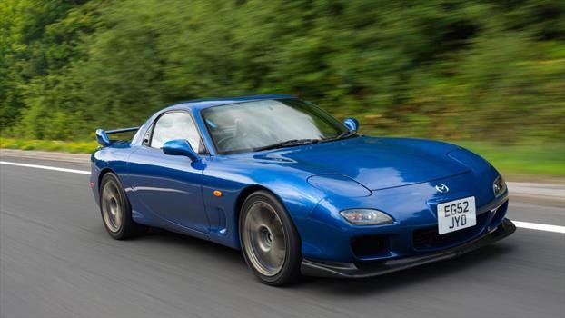

Mazda Rx7
Nissan Silvia
Nissan Skyline
Toyota Supra
Autos japoneses de los 90s
Explora los iconos que revolucionaron la industria automotriz en los 90s de Japón al mundo.

Mazda RX-7 FD
Nissan Silvia S15
Nissan Skyline R34 GT-R
Toyota Supra MK4